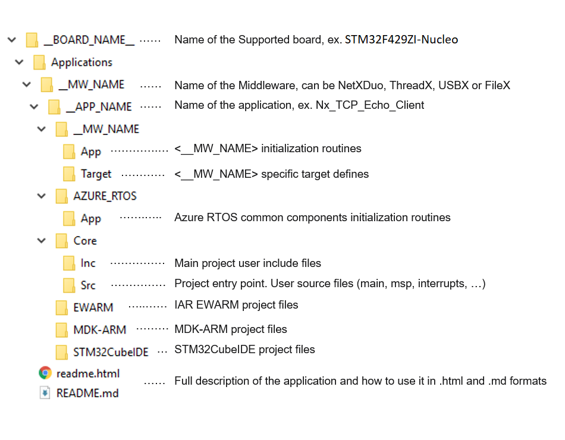

Release Notes for X-CUBE-AZRTOS-F4
Copyright © 2021 STMicroelectronics
Purpose
With Azure RTOS complementing the extensive STM32Cube ecosystem providing free development tools, software bricks, and software expansion packages, STM32 users can also leverage the rich services of Azure RTOS, which meet the needs of tiny, smart, connected devices.
X-CUBE-AZRTOS-F4 (Azure RTOS Software Expansion for STM32Cube) provides a full integration of Microsoft Azure RTOS in the STM32Cube environment for the STM32F4 series of microcontrollers. Ready-to-run applicative examples are also provided for the NUCLEO-F429ZI and STM32469I-DISCO evaluation boards, thus reducing the learning curve and ensuring a smooth application development experience with Azure RTOS and STM32F4 MCUs.
The scope of this package covers the following Azure RTOS middleware: RTOS (ThreadX), USB Device and Host (USBX), File System including NOR/NAND memories support (FileX and LevelX) and Networking including Ethernet and WiFi media (NetXDuo).

Azure RTOS is a professional grade, highly reliable and market proven Middleware suite:
- Integrated and full featured RTOS. Learn more ThreadX.
- Industrial grade networking stack: optimized for performance coming with many IoT protocols. Learn more Netx Duo
- Advanced FS/FTL: fully featured to support NAND/NOR Flash memories. Learn more FileX and LevelX
- USB Host and Device stacks coming with multiple classes. Learn more USBX
- Safety pre-certifications (from Microsoft): IEC 61508 SIL4, IEC 62304 Class C and ISO 26262 ASIL D
- Security pre-certifications (from Microsoft): EAL4+ for TLS/DTLS, FIPS 140-2 for SW crypto lib
- STM32 granted production license: here
Repository structure
The STMicroelectronics X-CUBE-AZRTOS-F4 repository consists of the following repositories:
- STM32CubeMX: contains STM32CubeMX configuration files:
- xml files: they describe how the software component configuration parameters can be modified through the STM32CubeMX user interface
- flt files: they provide the initialization code to be generated by the STM32CubeMX
- Drivers: contains STM32F4 CMSIS, HAL and BSP drivers
- Middlewares: contains ThreadX, NetX Duo, FileX, LevelX and USBX stacks including porting on STM32 hardware
- Projects: provides ready-to-run applicative examples for Azure RTOS on the supported boards. Projects are structured as follows:

Documentation
More comprehensive documentation is available on STM32 MCU Wiki.
Update history
Main changes
- Patch release
- Azure RTOS applications:
- Fix ThreadX message queue create (tx_queue_create) calls by using correct parameters
- CMSIS-RTOS wrapper for Azure RTOS ThreadX
- Fix hardfault crash when passing NULL argument in the osTimerNew()
- Fix return values for the osMessageQueueGet API
- Fix osThreadNew() API to support time-slice scheduling
Contents
CMSIS-RTOS wrapper for Azure RTOS ThreadX
| Name | Version | Release note |
|---|---|---|
| cmsis_rtos_threadx | 1.0.4 | release notes |
Main changes
- First official release of STM32Cube Azure RTOS software expansion for STM32F4 MCU series.
Contents
Applications
Provides ready-to-run applicative examples for Azure RTOS on the supported boards. For detailed list refer to applications list
Drivers
| Name | Version | Release note |
|---|---|---|
| Cortex-M CMSIS | v5.8.0 | release notes |
| STM32F4xx CMSIS | v2.6.7 | release notes |
| STM32F4xx HAL | v1.7.13 | release notes |
| BSP STM32F4-Discovery | v2.1.3 | release notes |
| BSP STM32F4xx_Nucleo_144 | v1.0.3 | release notes |
| BSP STM32F4xx-Nucleo | v1.2.7 | release notes |
| BSP STM32F401-Discovery | v2.2.3 | release notes |
| BSP STM32F411E-Discovery | v1.0.4 | release notes |
| BSP STM32F413H-Discovery | v1.0.1 | release notes |
| BSP STM32F429I-Discovery | v2.1.6 | release notes |
| BSP STM324x9I_EVAL | v3.0.1 | release notes |
| BSP STM324xG_EVAL | v3.0.2 | release notes |
| BSP STM32412G-Discovery | v2.0.1 | release notes |
| BSP STM32446E_EVAL | v2.1.0 | release notes |
| BSP STM32469I_EVAL | v2.1.0 | release notes |
| BSP STM32469I-Discovery | v2.1.0 | release notes |
| BSP Adafruit_Shield | v3.0.3 | release notes |
| BSP Common | v4.0.1 | release notes |
| BSP ampire480272 | v1.0.0 | release notes |
| BSP ampire640480 | v1.0.0 | release notes |
| BSP cs43l22 | v2.0.3 | release notes |
| BSP exc7200 | v1.0.1 | release notes |
| BSP ft6x06 | v1.1.0 | release notes |
| BSP i3g4250 | v1.0.0 | release notes |
| BSP ili9325 | v1.2.3 | release notes |
| BSP ili9341 | v1.0.2 | release notes |
| BSP l3gd20 | v2.0.0 | release notes |
| BSP lis3dsh | v2.0.0 | release notes |
| BSP lis302dl | v2.0.0 | release notes |
| BSP ls016b8uy | v1.0.0 | release notes |
| BSP lsm303agr | v1.0.0 | release notes |
| BSP lsm303dlhc | v2.0.0 | release notes |
| BSP mfxstm32l152 | v2.0.0 | release notes |
| BSP n25q128a | v1.0.0 | release notes |
| BSP n25q256a | v1.0.0 | release notes |
| BSP n25q512a | v1.0.0 | release notes |
| BSP nt35510 | v1.0.0 | release notes |
| BSP otm8009a | v1.0.4 | release notes |
| BSP ov2640 | v1.0.2 | release notes |
| BSP ov5640 | v2.0.0 | release notes |
| BSP s5k5cag | v1.0.0 | release notes |
| BSP s25fl512s | v1.0.0 | release notes |
| BSP st7735 | v1.1.1 | release notes |
| BSP st7789h2 | v1.1.1 | release notes |
| BSP stmpe811 | v2.0.0 | release notes |
| BSP stmpe1600 | v1.1.0 | release notes |
| BSP ts3510 | v1.0.1 | release notes |
| BSP wm8994 | v2.1.0 | release notes |
Middlewares
| Name | Version | Release note |
|---|---|---|
| ThreadX | 6.1.7 | release notes |
| NetXDuo | 6.1.7 | release notes |
| USBX | 6.1.7 | release notes |
| FileX | 6.1.7 | release notes |
| LevelX | 6.1.7 | release notes |
CMSIS-RTOS wrapper for Azure RTOS ThreadX
| CMSIS-RTOS API group | Supported | Short Description |
|---|---|---|
| Kernel Information and Control | Y | It provides version/system information and starts/controls the RTOS Kernel. More… |
| Thread Management | Y | It defines, create, and control thread functions.. More… |
| Thread Flags | N | It synchronizes threads using flags. More… |
| Event Flags | Y | It synchronizes threads using flags. More… |
| Generic Wait Functions | Y | It waits for a certain period of time.. More… |
| Timer Management | Y | It creates and controls timer and timer callback functions. More… |
| Mutex Management | Y | It synchronizes resource access using Mutual Exclusion (Mutex). More… |
| Semaphores | Y | It access shared resources simultaneously from different threads. More… |
| Memory Pool | N | It manages thread-safe fixed-size blocks of dynamic memory. More… |
| Message Queue | Y | It exchanges messages between threads in a FIFO-like operation. More… |
The CMSIS-RTOS provides generic RTOS interfaces for Arm® Cortex® processor-based devices. It provides a standardized API for software components that require RTOS functionality.
For more information about CMSIS-RTOS API V2, please refer to the ARM manual: CMSIS-RTOS API
For more information about CMSIS-RTOS wrapper for Azure RTOS ThreadX, please refer to readme
Known limitations
- STM32CubeMX configuration files (PDSC/IPmode/IPconfig)
- Some component inter-dependencies are missing and they will be added in future release
- Some configuration parameters inter-dependencies are missing and they will be added in future release
- Some configuration parameters minimum/maximum values are to be updated in the future release
- USBX composite device descriptors
- A maximum of 3 different class driver can be selected (restriction due to limited EP numbers)
- A list of USB device Applications supporting auto generation of USB Device framework descriptors provided for these USB class drivers :MSC, HID mouse, CDC ACM, CDC ECM, DFU. For the other device class drivers, user needs first to disable the device framework builder (refer to : USBx wiki section 2.2 How to customize) and provide the full set of required device descriptors.
- When using the Pack in STM32CubeMX: multi instance is not supported, a class driver can be instanced only once.
- NetXDuo
- Ethernet cable hot-plug detection not supported
- User needs to point to the HAL Drivers under X-CUBE-AZRTOS-F4 install path instead of the default location when creating a NetXDuo based project
- When using the Pack in STM32CubeMX
- FileX/LevelX: multi instance is not supported, a low level interface driver can be instanced only once
- USB Host Vbus is not managed by the Pack, user needs to configure the Vbus GPIO using STM32CubeMX “Pinout & Configuration” panel
- USB multi instance is not supported, a class driver can be instanced only once
- The component “USBX/CoreSystem” must be selected alongside either “USBX/UX Host CoreStack” or “USBX/UX Device CoreStack”
- When enabling “Network Ethernet Interface” component, the MX_ETH_Init() should be generated by STM32CubeMX with following settings in “Project Manager –> Advanced settings” panel :
- “Do Not Generate function call” should be checked
- “Visibility Static” should be unchecked
- X-CUBE-AZRTOS-F4 is not compatible with the MDK-ARM AC5 compiler: when generating a project for the MDK-ARM toolchain, the AC6 compiler is used by default
Development toolchains and compilers
- IAR Embedded Workbench for ARM (EWARM)toolchain 8.50.6 + ST-LINKV3.
- STM32CubeIDE V1.7.0 + ST-LINKV3
- RealView Microcontroller Development Kit (MDK-ARM) toolchain V5.32 + ST-LINKV3
Supported devices and boards
- NUCLEO-F429ZI (MB1137-B01)
- STM32469I-DISCO (MB1189-B03)
Dependencies
This software release is compatible with:
- STM32CubeMX V6.3.0
- STM32PackCreator 3.2.0